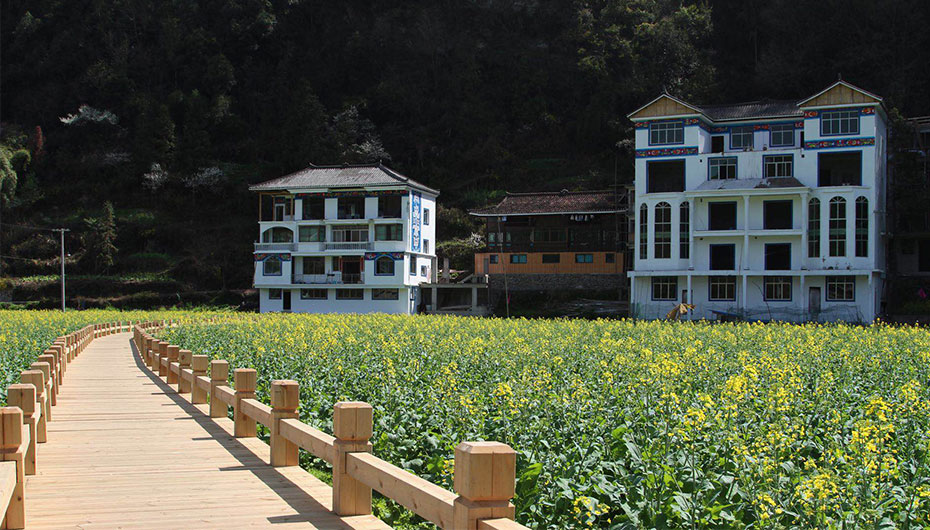
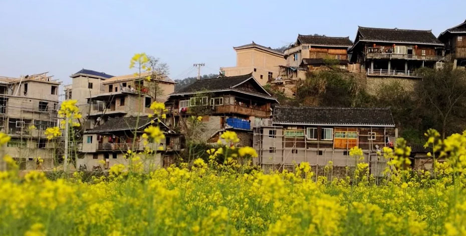
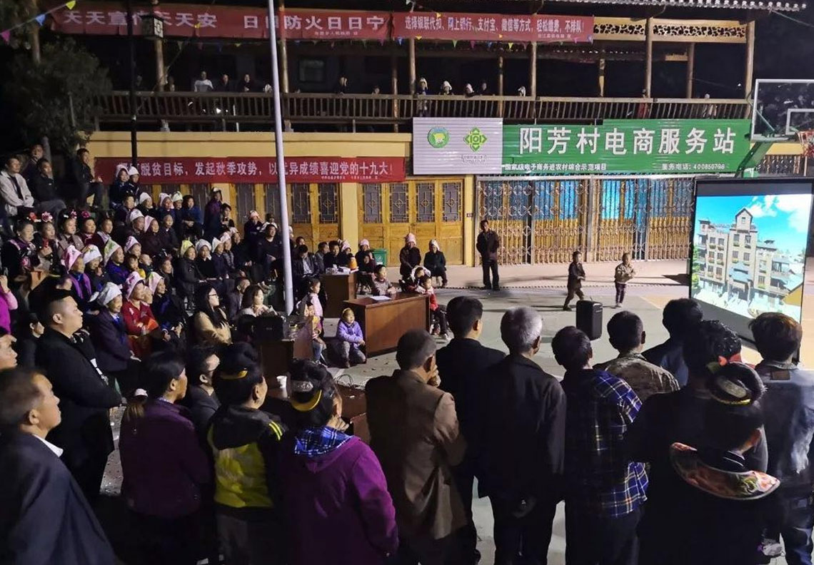

三月的风是轻的，是柔的；油菜花的味儿是香甜的，是悠远的；
而九七华夏的心是雀跃的，是期待的。
九七华夏团队在阳芳村驻村了将近一年的时间，在这一年的时间里，我们收获了很多，但更多的是与阳芳村的村民们建立了深厚的感 情。为了拉近与村民们的距离、增进村民情感，让村民了解项目的进展情况以及阳芳村未来的发展和规划。3月2了日晚上，阳芳村群 众大会在村篮球场如期举行。

会议前，大家都在风风火火的为大会而忙碌着，搬桌子、凳子、调音响、试投影仪。询问声、呐喊声、嬉笑声，各种声音此起彼伏。小孩子也不甘示弱，在九七华夏团队给他们画好的图案上面玩跳房子，好一番热闹的景象！

本次会议出席的领导有台江县副县长范修文、台盘乡书记王志清、台盘乡副乡长熊庆文等、约一百名村民参加会议。会议由王志清书记主持，王志清就其家乡的发展改变举例用当地少数语言进行讲话，呼吁村民要积极的配合政府和设计团队的工作。

会议最后由范修文副县长作指导讲话，范副县长首先对本次阳芳村村民的积极参与表示很欣慰，其次提出了阳芳村的三美、三难、四 个不容易、六个努力。
三美：第一，阳芳的自然山水美；第二，阳芳村民心灵美；第三：阳芳村未来建设美；
三难：第一，阳芳村的建设处于起步阶段；面临很多困难；第二，阳芳村村民的思想没有统一；第三，资金上的困难。
四个不容易：第一，阳芳能够多次召开群众大会，并且有全村三分之一的人来参加，在全村来说很不容易；第二，阳芳村的发展得到 了大家的支持，有了今天的成果很不容易；第三，阳芳的建设的下一步面临着更大的不容易；第四，县委县政府能够拿出资金支持阳 芳村的建设，对于台江县来说是历史上绝无仅有的，很不容易。
六个努力：第一，在拆牛圈、猪圈、厕所等需要得到村民的支持；第二，建设上，村民要支持施工的工作，未经过审批手续擅自建房 的将受到相关管理单位的严惩重罚；第三，施工单位要努力，加快建设、尽快完工；第四，设计单位要努力，结合农村的实际，拿出村 民满意的设计；第五，乡党委政府在改菩民风、民事协调、引导村民要努力；第六，县委县政府要努力。
在范修文副县长的讲话过程中，村民们都会热情的响应，从这个过程中可以看出阳芳村村民对阳芳村发展的关心与期待。
编辑: 黄兴桃 李娜
摄影: 洪策李娜